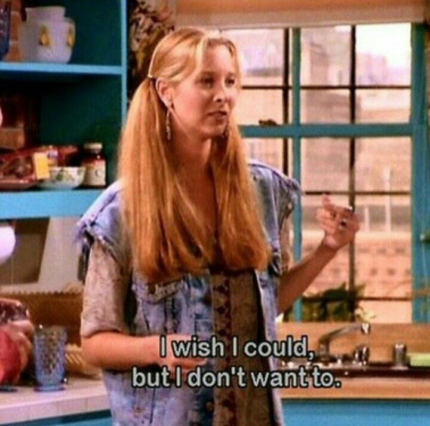
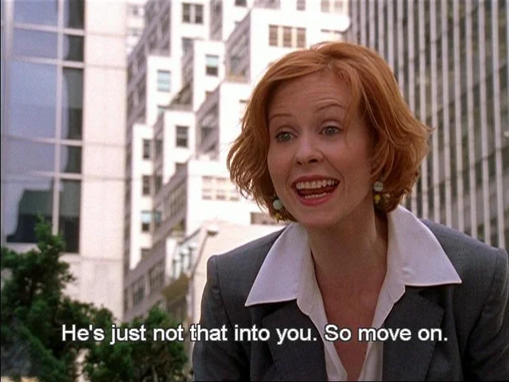

DATE: 2026-06-27
If you wanted to, you would
I get thoughts at work that are either philosophical or political or both because I’m so bored at work all the time. Being bored really breeds the mind for creative work like this. I sometimes think to myself that I should research these thoughts and create video essays on them for my friends and the entire world to see. But I never do. In fact, once it hits lunch or clock out it in fact leaves my brain. It comes back the next time I’m bored but it does leave my brain.
Which brings to this song by Perrie Edward “if he wanted to he would”. This song has 20% reliability to this because it’s about relationships and this thought bubble isn’t.
It's about you.
"If I wanted to, I would"
If I wanted to sit down, deep down every bored thought I had cause genuinely I find myself very interesting and wanted to make a video about it, I would’ve. I would’ve done it by now. But I didn’t. Because I simply did not want to, leading me to a new leading way of living my life. If I wanted to, I would.
If I wanted to do this and that, I would instead of making excuses for time and energy cause I’m busy with work or I’m busy with this other thing. No, I simply didn’t want to and this is my excuse or I simply wanted to do something else.
Even right now, I’m typing this at lunch when usually I eat and then study Mandarin and German. But I’m not doing that because I was so compelled by this thinking that I wanted to type it out and share it with you, and have your thoughts on it, whether you even want to read this or not.
In dating, for example, I never actually wanted to date. “Oh I’m focused on school”, “oh no one’s cute”, “oh, I just have no money”. No the simple truth is. I just don’t want to. PERIOD.
I went on a date because I just felt like I had to. I didn’t want to sleep with him. I didn’t really want to go. But I did anyways because I felt I owed it to him or myself to really try given my 20 years of life and no firsts. No first date, no first kiss, no first anything. But because I was doing something I didn’t want to do, it was a bad date and I ghosted him. He even asked me to kiss and I said no. He asked why? And I gave an excuse about we just ate and our mouths stink. But I just simply didn’t want to.
It even extends to other aspects too. When ex friends say “oh I miss you”, “oh I’ve been meaning to text you or catch up”. No. If you wanted to, you would’ve.

This thinking feels alleviating, it stopped me from questioning why some people won’t text me back, why responses feel dry at times, and how others really operate. It’s simply they just don’t want to, rather than giving every single excuse possible in the history of man. Sometimes you don’t need a reason, or the reason is just you wanted to. You can dig this deeper but I think I have typed enough to really get the idea going and what it means. I’m tired of complaining about my life to my friends, my lovely friends then suggesting actual solutions, and then I go “maybe”. But “maybe” never comes, in facts, it goes through a cycle where later I’m back complaining about the same topic I started off with. Thoughts?